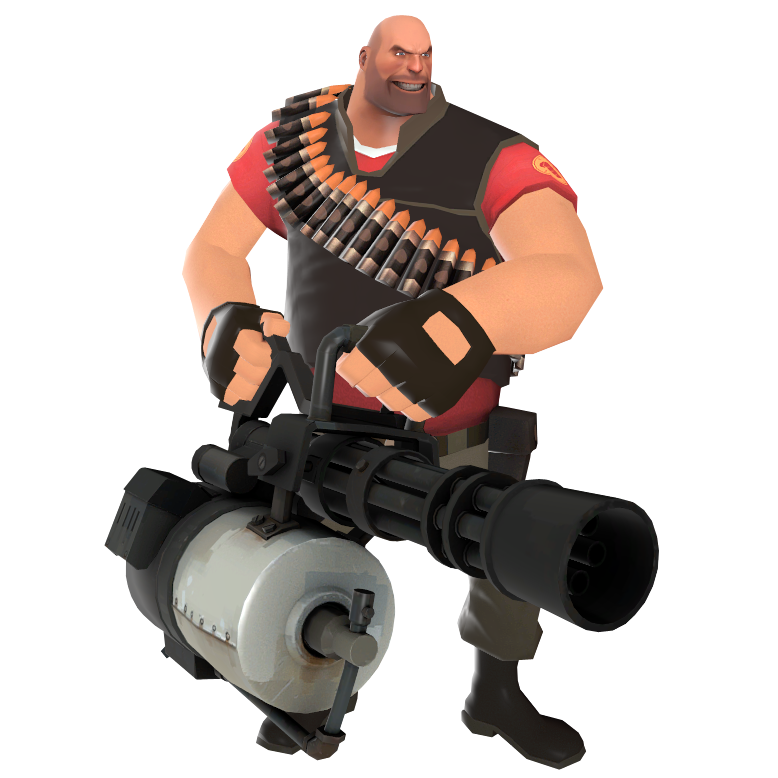

This webpage is about my love for the game Team Fortress 2

Team Fortress 2 is an amazing multiplayer first-person shooter game developed and published by Valve Corporation. It is the sequel to the 1999 Team Fortress Classic game. The game was released in October 2007 as part of The Orange Box for Windows and the Xbox 360. Players join one of two teams, RED, and BLUE, and then get to choose one of nine character classes. There are gamemodes such as Capture The Flag, King Of The Hill, Control Points, and the most popular, Community servers.
"The burning you feel? It is shame." -The Heavy
| b4nny | |
| Muselk | |
| SoundSmith | |
| FUNKe | |
| ArraySeven |

Email: TF2fanboy1748@gmail.com
Phone: 999-999-9999